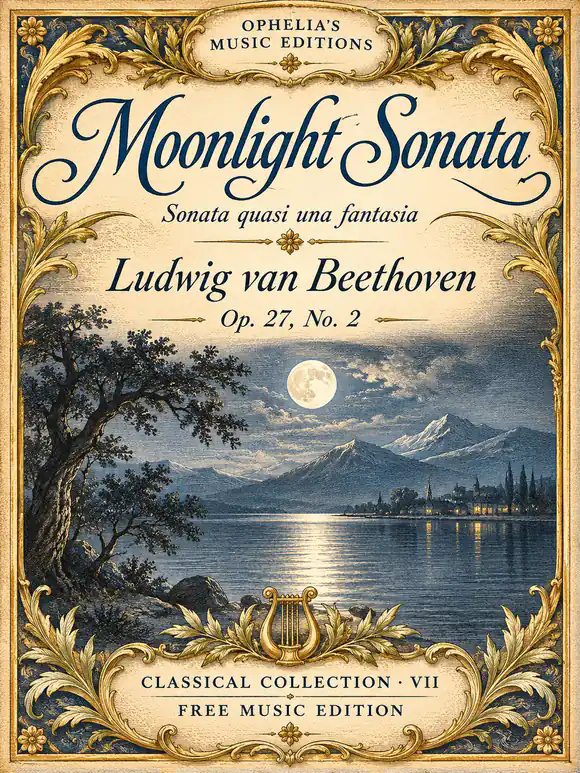

Moonlight Sonata
Ludwig van Beethoven (1770–1827) · Piano Sonata No. 14 in C-sharp minor, Op. 27, No. 2 · Sonata quasi una fantasia · 1801–1802. Three movements, from hushed moonlight to a storm of passion.
Everything here is free. Enjoy all three movements and read, print, or download the complete 23-page piano score. Beethoven’s original composition is public domain; the modern score typesetting and these digital-piano recordings are openly licensed and credited below. Ophelia’s cover is original artwork inspired by nineteenth-century engraving, not an antique facsimile.
Ophelia’s moonlit cover

Free sheet music · 23 pages
Score and credits: Beethoven, Sonata No. 14 “Moonlight”, Op. 27, No. 2, all three movements—Adagio sostenuto, Allegretto and Presto agitato. Score engraved by Chris Sawer and Stewart Holmes in LilyPond and published by the Mutopia Project, based on a 1908 edition. Score typesetting: CC BY-SA 2.5; full attribution retained in the PDF. Ophelia hosts the unmodified copy for reliable viewing. If the preview is blank, use the free PDF link above or Google’s alternative.